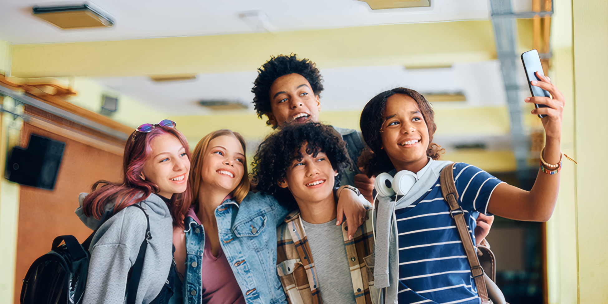

Human beings are inherently social creatures, and for many teenagers, the primary motivation to wake up in the morning is the prospect of seeing their friends. Positive peer relationships and supportive teacher-student bonds are the glue of school climate. When these relationships are healthy, school becomes a place of emotional connection and joy. Friends provide a buffer against academic stress, while approachable teachers inspire students to work harder simply because they don't want to let their mentors down. This social support network is critical for mood regulation; loneliness is a massive barrier to learning, whereas strong connections foster resilience and a collaborative spirit in studying.